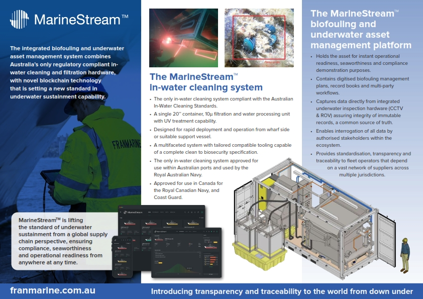

Franmarine Underwater Sustainment Services
Franmarine develops, engineers, manufactures and impliments environmentally compliant hull cleaning technology for the Marine industry. The integrated biofouling and underwater asset management system combines Australia’s only regulatory compliant in-water cleaning and filtration hardware, with novel blockchain technology that is setting a new standard in underwater sustainment capability. The integrated system assures operator compliance with in-water cleaning standards, whilst also enabling vessel operators to instantly demonstrate proactive biofouling management.
In a world where factual information is critical and used by regulators around the globe to authorise a vessel's entry into jurisdictions, accepting the status quo and simply relying on your service provider comes with significant financial, operational and reputational risk. Integrity, transparency, traceability and trust are all essential when supplying critical biofouling, marine biosecurity and underwater sustainment services to the maritime sector.
Effective biofouling management depends upon multiple stakeholders, across multiple jurisdictions, each with its own agenda. This represents a complex and challenging environment for vessel operators when it comes to demonstrating compliance.
With a deep understanding of the challenges that biofouling represents to various stakeholders, a decentralised operating model approach to solving these issues using distributed ledger technology (blockchain), for the effective and efficient implementation of biofouling management requirements across the ecosystem was taken by Franmarine in 2018.
MarineStream™ is the purpose-built platform that is orchestrating the biofouling management ecosystem today. It is a key enabler for the practical implementation of IMO biofouling guidelines, in-country regulations and end-to-end continuous improvement.

More About Us
Patented Technology
Our patented Franmarine Marinestream System is built on a Siemens platform and enables a high degree of customization, while our real-time monitoring system allows us to continuously improve operational efficiency – a benefit we share with our clients.
Cleaning Tools
UPDATE THIS TEXT
Filtration Process
The captured and extracted water and bio-fouling debris is then passed through a multistage, modular filtration and treatment system where the bio-fouling debris and particles are separated from the water. The separated biofouling debris is bagged and disposed of at a registered land fill site. The water is then filtered through a 3-way filtration system and disinfected by a UV Reactor. The UV Reactor effectively disinfects organisms such as bacteria and phytoplankton. The neutralised water is discharged back to the original water source.